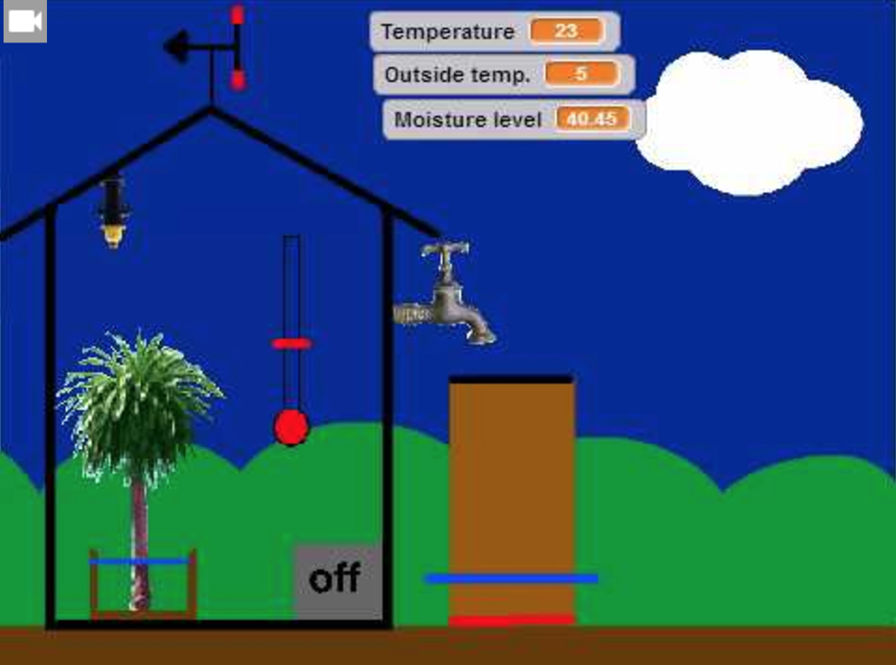

Lärande och ledarskap:
Chalmers tekniska högskola
Under VT16 arbetade Chalmers-studenter från masterprogrammet Lärande och Ledarskap med att ta fram den pedagogiska utbildningsplan som Så ett frö utgår ifrån med fokus på utbildningspaketet - Vi börjar från Scratch. Utbildningsplanen visar upplägget för en programmeringskurs för högstadiet och gymnasieelever som är intreserade och vill lära sig mer om programmering. I kursen får eleverna arbeta med programmering i Scratch.
M.Sc. studenter:
- Christian Andersson

- Daniel Andersson
- Maria Engver
- Niklas Liljegren
Uppdragsgivare:
Lärande och Ledarskap, kursbeskrivning
En unik masterutbildning på två år som förenar kunskaper i matematik, naturvetenskap och teknik med kunskaper om hur man kommunicerar och samverkar. Utbildningen leder till både civilingenjörs- och ämneslärarexamen. Lärande och ledarskap är en påbyggnadsutbildning för ingenjörer som vill jobba med människor och kommunikation. Studenterna får kunskaper som gymnasielärare behöver och som företag efterfrågar. De blir expert på att leda lärande, människor och organisationer. Så ett frö kom i kontakt med studenterna då de skulle skriva ett arbete och ta fram en utbildningsplan för en unik kurs. De hade hört gott om Mathivations arbete inom matematik som la en grund för deras arbete.
Vi börjar från Scratch, utbildningspaket.
Syftet med utbildningen är att ge eleven en grundläggande förståelse för programmering. De ska ha förutsättningar för framtida arbete med programmering både på egen hand och inom arbetslivet. Utbildningen ska framhäva bredden inom programmering för att väcka intresse för teknik hos alla elever. Målet med kursen är att eleven skall förstå och kunna använda programmering som verktyg i Scratch. Eleven skall kunna programmera ett enklare spel i Scratch och aktivt delta i programmerandet av ett helautomatiserat växthus i Scratch. Utbildningen sker över sex halvdagar. Varje tillfälle ska generellt börja med en inspirations-föreläsning följt med en genomgång för att avslutas med moment av eget arbete eller i grupp. Undervisningen är uppdelad i två block. Det första blocket handlar mycket om inspiration och att eleverna ska få börja läara sig Scratch. Det andra blocket handlar om hållbar utveckling och att ta fram ett automatiserat växthus i Scratch.

Skolverkets kursplaner, matematik, teknik och allmänt.
Eftersom kursen ska hållas under skoltid kopplas dess innehåll till det centrala innehåll, de kunskapskrav samt de förmågor som finns i Skolverkets kursplaner mot högstadiet.
Matematik
- "Innebörden av variabelbegreppet och dess användning i algebraiska uttryck, formler och ekvationer.” - (Skolverket, 2011b)
Teknik
- ”Utveckla sin förmåga att identifiera problem och behov som kan lösas med teknik och utarbeta förslag till lösningar.” - (Skolverket, 2011b)
- ”Utveckla sin förmåga att värdera konsekvenser av olika teknikval för individ samhälle och miljö.” - (Skolverket, 2011b)
Allmänt
- “Skolan har i uppdrag att överföra grundläggande värden och främja elevernas lärande för att därigenom förbereda dem för att leva och verka i samhället.” - (Skolverket, 2011c)
- “Genom ett miljöperspektiv får de möjligheter både att ta ansvar för den miljö de själva direkt kan påverka och att skaffa sig ett personligt förhållningssätt till övergripande och globala miljöfrågor. Undervisningen ska belysa hur samhällets funktioner och vårt sätt att leva och arbeta kan anpassas för att skapa hållbar utveckling.” - (Skolverket, 2011c)